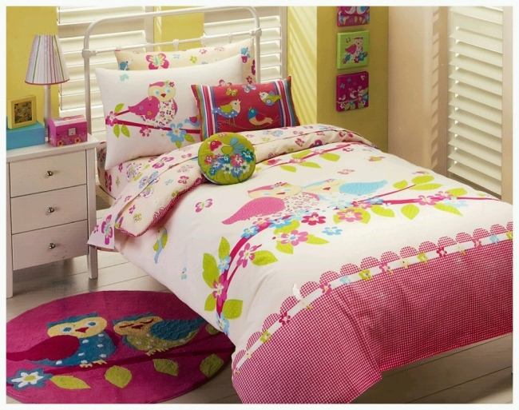

Well done!
We hope you are learning to look for GOOD things and CALM things.
Now let's have another break and catch more happy and calm faces.
On the next screen, use the mouse to click on the happy face to start the game.
Then click on as many happy and calm faces as you can and
see how many points you can get this time!
| |
|
 | |